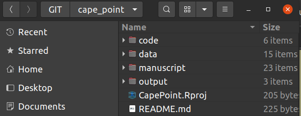

4 Reproducible research
4.1 The Reproducibility Crisis
“Replication is the ultimate standard by which scientific claims are judged.” (Peng 2011)
Replication is one of the fundamental tenets of science and if the results of a study or experiment cannot by replicated by an independent set of investigators then whatever scientific claims were made should be treated with caution! At best, it suggests that evidence for the claim is weak or mixed, or specific to particular ecosystems or other circumstances and cannot be generalized. At worst, there was error (or even dishonesty) in the original study and the claims were plainly false.
In other words, published research should be robust enough and the methods described in enough detail that anyone else should be able to repeat the study (using the publication only) and find similar results. Sadly, this is rarely the case!!!
!['Is there a reproducibility* crisis?' Results from a survey of >1500 top scientists [@Baker2016; @Penny2016]. *Note that they did not discern between reproducibility and replicability, and that the terms are often used interchangeably.](BIO3019S-Ecoforecasting_files/figure-html/reprocrisis-1.png)
Figure 4.1: ‘Is there a reproducibility* crisis?’ Results from a survey of >1500 top scientists (Baker 2016; Penny 2016). *Note that they did not discern between reproducibility and replicability, and that the terms are often used interchangeably.
We have a problem…
Since we’re failing the gentleman’s agreement1 that we’ll describe our methods in enough detail that anyone else should be able to repeat the study (using the publication only) and find similar results, modern scientists are trying to formalize the process in the form of Reproducible Research. Reproducible research makes use of modern software tools to share data, code and other resources required to allow others to reproduce the same result as the original study, thus making all analyses open and transparent.
As you will learn in this module, working reproducibly is not just a requirement for using quantitative approaches in iterative decision-making, it is central to scientific progress!!!
While full replication is a huge challenge (and sometimes impossible) to achieve, it is something all scientists should be working towards.
4.2 Replication and the Reproducibility Spectrum
Understandably, some studies may not be entirely replicable purely due to the nature of the data or phenomenon (e.g. rare phenomena, long term records, loss of species or ecosystems, or very expensive once-off science projects like space missions). In these cases the “gold standard” of full replication (from new data collection to results) cannot be achieved, and we have to settle for a lower rung on the reproducibility spectrum (Figure 4.2).
![The Reproducibility Spectrum [@Peng2011].](img/peng_reproducibility.jpg)
Figure 4.2: The Reproducibility Spectrum (Peng 2011).
Reproducibility falls short of full replication because it focuses on reproducing the same result from the same data set, rather than analyzing independently collected data. While this may seem trivial, you’d be surprised at how few studies are even reproducible, let alone replicable.
4.3 Why work reproducibly?
](img/miracle.jpg)
Figure 4.3: Let’s start being more specific about our miracles… Cartoon © Sidney Harris. Used with permission ScienceCartoonsPlus.com
In addition to basic scientific rigour, working reproducibly is hugely valuable, because:
(Adapted from “Five selfish reasons to work reproducibly” (Markowetz 2015))
- It helps us avoid mistakes and/or track down errors in analyses
- This is what highlighted the importance of working reproducibly for me. In 2017 I published the first evidence of observed climate change impacts on biodiversity in the Fynbos Biome (Slingsby et al. 2017). The analyses were quite complicated, and when working on the revisions I found an error in my R code. Fortunately, it didn’t change the results qualitatively, but it made me realize how easy it is to make a mistake and potentially put the wrong message out there! This encouraged me to make all data and R code from the paper available, so that anyone is free to check my data and analyses and let me (and/or the world) know if they find any errors.
- It makes it easier to write papers
- e.g. Dynamic documents like RMarkdown or Jupyter Notebooks update automatically when you change your analyses, so you don’t have to copy/paste or save/insert all tables and figures (or worry about whether you included the latest versions.
- It helps the review process
- Often issues picked at by reviewers are matters of clarity/confusion. Sharing your data and analyses allows them to see exactly what you did, not just what you said you did, allowing them to identify the problem and make constructive suggestions.
- It’s also handy to be able to respond to a reviewer’s comment with something like “That’s a great suggestion, but not really in line with the objectives of the study. We have chosen not to include the suggested analysis, but do provide all data and code so that interested readers can explore this for themselves.” (Feel free to copy and paste - CCO 1.0)
- It enables continuity of the research
- When people leave a project (e.g. students/postdocs), or you forget what you did X days/weeks/months/years ago, it can be a serious setback for a project and make it difficult for you or a new student to pick up where things left off. If the data and workflow are well curated and documented this problem is avoided. Trust me, this is a very common problem!!! I have many papers that I (or my students) never published and may never go back to, because I know it’ll take me a few days or weeks to understand the datasets and analyses again…
- This is obviously incredibly important for long-term projects!!!
- It helps to build your reputation
- Working reproducibly makes it clear you’re an honest, open, careful and transparent researcher, and should errors be found in your work you’re unlikely to be accused of dishonesty (e.g. see my paper example under point 1 - although no one has told me of any errors yet…).
- When others reuse your data, code, etc you’re likely to get credit for it - either just informally, or formally through citations or acknowledgements (depending on the licensing conditions you specify - see “Preserve” in the Data Life Cycle).
And some less selfish reasons (and relevant for ecoforecasting):
- It allows you (or others) to rapidly build on previous findings and analyses
- It allows easy comparison of new analytical approaches to older ones
- It makes it easy to repeat the same analyses when new data are collected or added
And one more selfish reason (but don’t tell anyone I said this): Should you decide to leave biology, reproducible research skills are highly sought after in other careers like data science etc…
4.4 Barriers to working reproducibly
(Adapted from “A Beginner’s Guide to Conducting Reproducible Research” (Alston and Rick 2021))
1. Complexity
- There can be a bit of a learning curve in getting to know and use the tools for reproducible research effectively.
- One is always tempted by the “easy option” of doing it the way you already know or using “user-friendly” proprietary software.
2. Technological change
- Hardware and software used in analyses change over time - either changing with updates or going obsolete altogether - making it very difficult to rerun old analyses.
- This should be less of a problem going forward because it is something people are aware of. Documenting hardware and software versions with analyses is an easy baseline. One can also use contained computing environments as we’ll discuss below.
3. Human error
- Simple mistakes or failure to fully document protocols or analyses can easily make a study irreproducible.
- Most reproducible research tools are aimed at solving this problem.
4. Intellectual property rights
- Rational self-interest can lead to hesitation to share data and code via many pathways:
- Fear of not getting credit; Concern that the materials shared will be used incorrectly or unethically; etc
- Hopefully most of these issues will be solved by better awareness of licensing issues, attribution, etc, as the culture of reproducible research grows
4.5 Reproducible Scientific Workflows
, used under a [CC-BY-NC 2.5 license](https://creativecommons.org/licenses/by-nc/2.5/).](img/xkcd_data_pipeline_2x.png)
Figure 4.4: ‘Data Pipeline’ from xkcd.com/2054, used under a CC-BY-NC 2.5 license.
Working reproducibly requires careful planning and documentation of each step in your scientific workflow from planning your data collection to sharing your results.
This entails a number of overlapping/intertwined components, namely:
- Data management - which we’ll spend more time on in Chapter 5
- File and folder management
- Coding and code management - i.e. the data manipulation and analyses performed
- Computing environment and software
- Sharing of the data, metadata, code, publications and any other relevant materials
For the rest of this section we’ll work through these components and some of the tools that help you achieve this.
4.5.1 File and folder management
Project files and folders can get unwieldy fast, and can really bog you down and inhibit productivity when you don’t know where your files are or what the latest version is.
, used under a [CC-BY-NC 2.5 license](https://creativecommons.org/licenses/by-nc/2.5/).](img/documentnaming.png)
Figure 4.5: ‘Documents’ from xkcd.com/1459, used under a CC-BY-NC 2.5 license.
The two main considerations for addressing this issue are a) defining a simple, common folder structure, and b) using informative file names.
Folders
Most ecological projects have similar requirements. Here’s a screenshot of how I usually manage my folders.

- Within “Data” I often have separate folders of “Raw” and “Processed” data.
- “Output” contains figures and tables, often in separate folders.
- “Code” we’ll deal with in the next section.
- I also often have a “Manuscript” folder if I’m working in LaTeX/Sweave or RMarkdown, although this is often in the “Code” folder (since you can embed code in RMarkdown and Sweave documents).
File and folder naming
Your naming conventions should be:
- machine readable
- i.e. avoid spaces and funny punctuation
- support searching and splitting of names
- human readable
- the contents should be self evident from the file name
- support sorting
- i.e. use numeric or character prefixes to separate files into different components or steps (e.g. “data_raw_localities.csv,” “data_clean_localities.csv,” etc)
- some of this can be handled with folder structure, but you don’t want too many folders either
Find out more about file naming here.
4.5.2 Coding and code management
Why write code?
Working in point-and-click GUI-based software like Excel, Statistica, SPSS, etc may seem easier, but you’ll regret it in the long run…
The beauty of writing code lies in"
- Automation
- You will inevitably have to adjust and repeat your analysis as you get feedback from supervisors, collaborators and reviewers. Rerunning code is one click, and you’re unlikely to introduce errors. Rerunning analyses in GUI-based software is lots of clicks and it’s easy to make mistakes, alter default settings, etc etc.
- Next time you need to do the same analysis on a different dataset you can just copy, paste and tweak your code.
- You code/script provides a record of your analysis
- Linked to the above, mature scientific coding languages like Python or R allow you to run almost any kind of analysis in one scrpited workflow, even if it has diverse components like GIS, phylogenetics, multivariate or Bayesian statistics, etc.
- Most proprietary software are limited to one or a few specialized areas (e.g. ArcGIS, etc), which leaves you manually exporting and importing data between multiple software packages…
- Most scripting environments are open source (e.g. R, Python, JavaScript, etc)
- Anyone wanting to use your code doesn’t have to pay for a software license
- It’s great for transparency - Lots of people can and have checked the background code and functions you’re using, versus only the software owner’s employees have access to the raw code for most analytical software
- There’s usually a culture of sharing code (online forums, with publications, etc)
Here’s a motivation and some tutorials to help you learn R.
Some coding rules
It’s easy to write messy code. This can make it virtually indecipherable to others (and even yourself), slowing you and your collaborations down. It also makes it easy to make mistakes and not notice them. The overarching rule is to write code for people, not computers. Some basic rules:
- use consistent, meaningful and distinct names for variables and functions
- use consistent code and formatting style
- use commenting to document and explain what you’re doing at each step or in each function - purpose, inputs and outputs
- write functions rather than repeating the same code
- check for mistakes at every step!!!
- modularize code into manageable steps/chunks
- or even separate them into separate scripts that can all be called in order from a master script or Makefile
- start with a “recipe” that outlines the steps/modules (usually as commented headers etc). This is very valuable for keeping you organized and on track, e.g. a common recipe:
- #Header indicating purpose, author, date, version etc
- #Define settings
- #Load required libraries
- #Read in data
- #Wrangle/reformat/clean/summarize data as required
- #Run analyses (often multiple steps)
- #Wrangle/reformat/summarize analysis outputs for visualization
- #Visualize outputs as figures or tables
- avoid proprietary formats
- i.e. use an open source scripting langauge and open source file formats only
- “notebooks” like RMarkdown or Jupyter Notebooks are very handy for fulfilling roles like documentation, master/makefiles etc and can be developed into reports or manuscripts
- use version control!!!
Version control
Using version control tools like Git, SVN, etc can be challenging at first, but they can also hugely simplify your code development (and adaptation) process. While they were designed by software developers for software development, they are hugely useful for quantitative biology.
I can’t speak authoritatively on version control systems (I’ve only ever used Git and GitHub), but here are the advantages as I see them. This version is specific to Git, but I imagine they all have similar functions and functionality:
Words in italics are technical terms used within GitHub. You can look them up here. You’ll also cover it in the brief tutorial you’ll do when setting up your computer for the practical.
- They generally help project management, especially collaborations
- They allow you to easily share code with collaborators or the public at large - through repositories or gists (code snippets)
- Users can easily adapt or build on each others’ code by forking repositories and working on their own branch.
- This is truly powerful!!! It allows you to repeat/replicate analyses but even build websites (like this one!), etc
- While the whole system is online, you can also work offline by cloning the repository to your local machine. Once you have a local version you can push to or pull from the online repository to keep everything updated
- Changes are tracked and reversible through commits. If you change the contents of a repository you must commit them and write a commit message before pulling or pushing to the online repository. Each commit is essentially a recoverable version that can be compared or reverted to
- This is the essence of version control and magically frees you from folders full of lists of files named “mycode_final.R,” “mycode_finalfinal.R,” “myfinalcode_finalfinal.R” etc as per Figure 4.5
- They allow collaborators or the public at large to propose changes via pull requests that allow you to merge their forked branch back to the main (or master) branch
- They allow you to accept and integrate changes seamlessly when you accept and merge pull requests
- They allow you to keep written record of changes through comments whenever a commit or pull request is made - these also track the user, date, time, etc and are useful for blaming when things go wrong
- There’s a system for assigning logging and tracking issues and feature requests
I’m sure this is all a bit much right now, but should make more sense after the practical…
4.5.3 Computing environment and software
We’ve already covered why you should use open source software whenever possible, but it bears repeating. Using proprietary software means that others have to purchase software, licenses, etc to build on your work and essentially makes it not reproducible by putting it behind a pay-wall. This is self-defeating…
Another issue is that software and hardware change with upgrades, new versions or changes in the preferences within user communities (e.g. you’ll all know MicroSoft Excel, but have you heard of Quattro Pro or Lotus that were the preferred spreadsheet software of yesteryear?).
Just sharing your code, data and workflow does not make your work reproducible if we don’t know what language the code is written in or if functions change or are deprecated in newer versions, breaking your code.
The simplest way to avert this problem is to carefully document the hardware and versions of software used in your analyses so that others can recreate that computing environment if needed. This is very easy in R, because you can simply run the sessionInfo() function, like so:
sessionInfo()## R version 4.1.1 (2021-08-10)
## Platform: x86_64-pc-linux-gnu (64-bit)
## Running under: Ubuntu 20.04.3 LTS
##
## Matrix products: default
## BLAS: /usr/lib/x86_64-linux-gnu/blas/libblas.so.3.9.0
## LAPACK: /usr/lib/x86_64-linux-gnu/lapack/liblapack.so.3.9.0
##
## locale:
## [1] LC_CTYPE=en_ZA.UTF-8 LC_NUMERIC=C
## [3] LC_TIME=en_ZA.UTF-8 LC_COLLATE=en_ZA.UTF-8
## [5] LC_MONETARY=en_ZA.UTF-8 LC_MESSAGES=en_ZA.UTF-8
## [7] LC_PAPER=en_ZA.UTF-8 LC_NAME=C
## [9] LC_ADDRESS=C LC_TELEPHONE=C
## [11] LC_MEASUREMENT=en_ZA.UTF-8 LC_IDENTIFICATION=C
##
## attached base packages:
## [1] stats graphics grDevices utils datasets
## [6] methods base
##
## other attached packages:
## [1] hrbrthemes_0.8.0 knitr_1.33 forcats_0.5.1
## [4] stringr_1.4.0 dplyr_1.0.7 purrr_0.3.4
## [7] readr_1.4.0 tidyr_1.1.3 tibble_3.1.3
## [10] ggplot2_3.3.5 tidyverse_1.3.1
##
## loaded via a namespace (and not attached):
## [1] httr_1.4.2 sass_0.4.0
## [3] jsonlite_1.7.2 splines_4.1.1
## [5] modelr_0.1.8 bslib_0.2.5.1
## [7] assertthat_0.2.1 highr_0.9
## [9] cellranger_1.1.0 yaml_2.2.1
## [11] gdtools_0.2.3 Rttf2pt1_1.3.8
## [13] pillar_1.6.2 backports_1.2.1
## [15] lattice_0.20-44 glue_1.4.2
## [17] extrafontdb_1.0 digest_0.6.27
## [19] promises_1.2.0.1 RColorBrewer_1.1-2
## [21] rvest_1.0.0 colorspace_2.0-2
## [23] httpuv_1.6.1 Matrix_1.3-4
## [25] htmltools_0.5.1.1 pkgconfig_2.0.3
## [27] broom_0.7.7 servr_0.22
## [29] haven_2.4.1 bookdown_0.22
## [31] scales_1.1.1 later_1.2.0
## [33] jpeg_0.1-9 mgcv_1.8-36
## [35] generics_0.1.0 farver_2.1.0
## [37] ellipsis_0.3.2 withr_2.4.2
## [39] cli_3.0.1 magrittr_2.0.1
## [41] crayon_1.4.1 readxl_1.3.1
## [43] evaluate_0.14 fs_1.5.0
## [45] fansi_0.5.0 nlme_3.1-152
## [47] xml2_1.3.2 tools_4.1.1
## [49] hms_1.1.0 lifecycle_1.0.0
## [51] munsell_0.5.0 reprex_2.0.0
## [53] compiler_4.1.1 jquerylib_0.1.4
## [55] systemfonts_1.0.2 rlang_0.4.11
## [57] grid_4.1.1 rstudioapi_0.13
## [59] labeling_0.4.2 rmarkdown_2.8
## [61] gtable_0.3.0 DBI_1.1.1
## [63] R6_2.5.0 lubridate_1.7.10
## [65] extrafont_0.17 utf8_1.2.2
## [67] stringi_1.6.2 Rcpp_1.0.6
## [69] vctrs_0.3.8 png_0.1-7
## [71] dbplyr_2.1.1 tidyselect_1.1.1
## [73] xfun_0.24A “better” way to do this is to use containers like docker or singularity. These are contained, lightweight computing environments similar to virtual machines, that you can package with your software/workflow. You set your container up to have everything you need to run your code etc (and nothing extra), so anyone can download (or clone) your container, code and data and run your analyses perfectly first time.
4.5.4 Sharing of the data, code, publication etc
This is touched on in more detail when we discuss data management in Chapter 5, but suffice to say there’s no point working reproducibly if you’re not going to share all the components necessary to complete your workflow…
Another key component here is that ideally all your data, code, publication etc are shared Open Access - i.e. they are not stuck behind some paywall
![A 3-step, 10-point checklist to guide researchers toward greater reproducibility in their research [@Alston2021].](img/alstonreproducibility.jpg)
Figure 4.6: A 3-step, 10-point checklist to guide researchers toward greater reproducibility in their research (Alston and Rick 2021).
References
I know many may find the use of this term offensive. In fact, I have used it here because that offense highlights my point. “Gentlemen’s agreements” have been used for nefarious purposes since the dawn of time should have no place in science as we strive to make the discipline more transparent, open and inclusive.↩︎